搜索，不必先想好去哪
百度、必应、哔哩哔哩等搜索引擎一键切换，输入时即时给出联想；搜索历史留在本机，随时可清。
功能
不追求塞满，而是把每天都会用到的几件事，放在伸手就能碰到的地方。
百度、必应、哔哩哔哩等搜索引擎一键切换，输入时即时给出联想；搜索历史留在本机，随时可清。
分类、拖拽排序、自定义图标与程序坞。也可以从浏览器书签一键导入，不用从头重建。
天气、热榜、日历黄历、备忘、收藏夹、喝水提醒、下班与假期倒计时……按需摆放，随手收起。
二维码、加解密、PDF、图片压缩与切分、人民币大写，还有 2048 和五子棋陪你歇一会儿。
四套 canvas 动态主题随窗口实时绘制；也可以换成必应每日壁纸，或从自建壁纸库里挑一张。
不做账号、不接统计、不投放广告。设置与内容只保存在本地；换电脑时，把配置和备忘导出成一份 JSON，再手动导入即可。
组件实拍
不用先想象它们长什么样。天气、热榜、日历、备忘录、喝水提醒、汇率……以下都是扩展里的真实组件截图。挑需要的摆上桌面，位置可以自己安排。
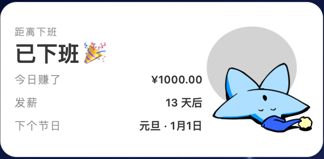
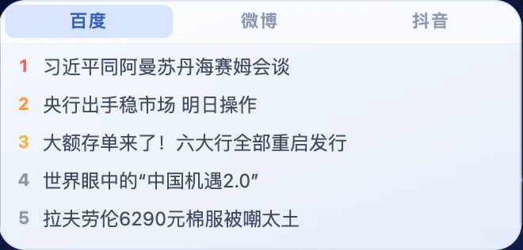
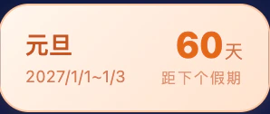
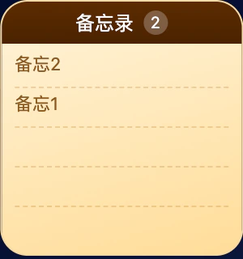
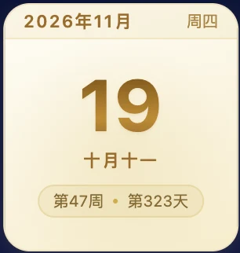
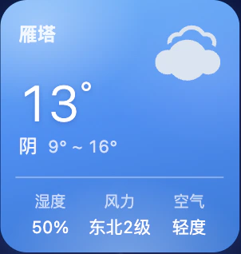
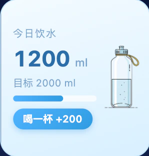
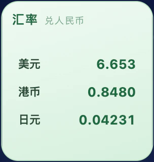
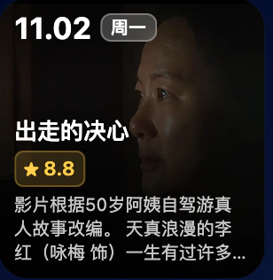
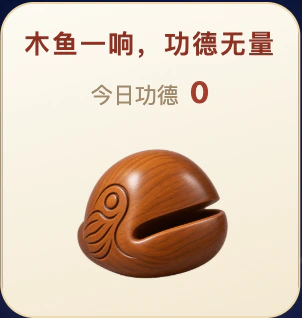
截图中的日期、数据与主题来自实际使用，具体显示会随你的设置变化。
小组件
每个小组件都可以独立开关、移动和收起。起始页不必一次配置到完美，慢慢长成自己的样子就好。
主题与壁纸
星野、星野 2、雪夜与秋山由 canvas 实时绘制：随窗口自适应，不额外请求图片，切换时也不会先闪一下白屏。
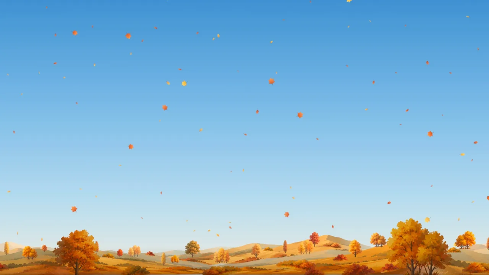
canvas 实时绘制 · 随窗口自适应
深蓝夜空、群山与缓慢掠过的星轨，安静的开场。
湖面倒映着银河，夜色更开阔，也更适合大屏。
松林、雪坡与远处的暖灯，冷色里留一点温度。
层林尽染的山谷，把整个屏幕染成暖调。
专注模式
选一段音景，设好时长，专注页会替你守住这段时间。计时、音量与记录都在本地完成，不需要联网，也不需要登录。
设置、备忘、应用列表、提醒记录与专注记录保存在浏览器本地；手动导出的备份文件也只保存在浏览器的下载位置，不经过开发者服务器。
没有账号体系、统计脚本与广告 SDK；不读取浏览历史，不出售或共享你的任何数据。
天气、热榜、汇率、图标与电影信息都来自公开接口，仅在对应小组件使用时发起，完整清单写在隐私政策里。
常见问题
不会。扩展没有申请 tabs 或 history 权限。它只在两种情况下接触浏览器数据：你主动打开「收藏夹」小组件时读取本地书签；你点击喝水通知后聚焦起始页。两者都不会把数据发往外部。
设置、应用列表、备忘、提醒与专注记录等数据保存在浏览器为扩展分配的本地空间（chrome.storage.local、localStorage 与 IndexedDB）。卸载扩展会清除这些数据，开发者没有副本可以恢复，也无法代为删除；如果你曾手动导出备份，那份 JSON 文件会保留在你保存它的位置，需要自行保管或删除。
在旧电脑打开「设置 → 数据 → 导出配置」，会下载一份 星屿备份-YYYYMMDD-HHmm.json，其中包含应用、分类、程序坞、备忘录、外观与组件设置（含搜索历史与小游戏进度），自定义背景可选是否一起打包。把文件拷到新电脑，安装星屿后在同一个入口选择「导入配置」即可。导入会覆盖新电脑上现有的配置，建议先导出一份做备份；整个读写过程都在本地完成，文件不会上传到任何服务器。
bookmarks 用于展示与导入书签，它是可选权限：安装时不会申请，首次打开「收藏夹」并点击「允许读取书签」时才会向你确认；notifications 与 alarms 用于到点弹出喝水提醒；storage 保存本地设置；favicon 用于在本地显示站点图标；declarativeNetRequest 只为豆瓣电影海报与详情请求补充必要的请求头。逐项说明见隐私政策。
支持 Chrome 116 及以上版本，以及基于 Chromium 的 Microsoft Edge 等浏览器。扩展基于 Manifest V3 构建。
天气来自 i.tianqi.com，热榜来自 uapis.cn 与 codelife.cc（今日热榜）两个公开聚合接口（优先前者，失败时自动回退），汇率来自 Frankfurter，电影简介与剧照来自豆瓣公开接口；壁纸、假期安排与电影日历数据由本扩展的自建数据服务提供。所有请求只在你使用对应小组件时发生。
八段音景的素材来自 99Sounds 与 Pixabay，按各自授权用于本扩展。音频已统一响度并压缩为 Opus，随扩展安装包一起分发；播放时由浏览器在本地解码循环，不会发起网络请求，也不会向任何服务器上传你的播放选择。
会。专注状态、时长与音景偏好、历次专注记录都保存在浏览器本地（chrome.storage.local），没有账号，也没有云端副本，并且不随「导出配置」迁移。卸载扩展或清除扩展数据时，这些记录会一并删除且无法恢复；需要留存请自行截图或记录。